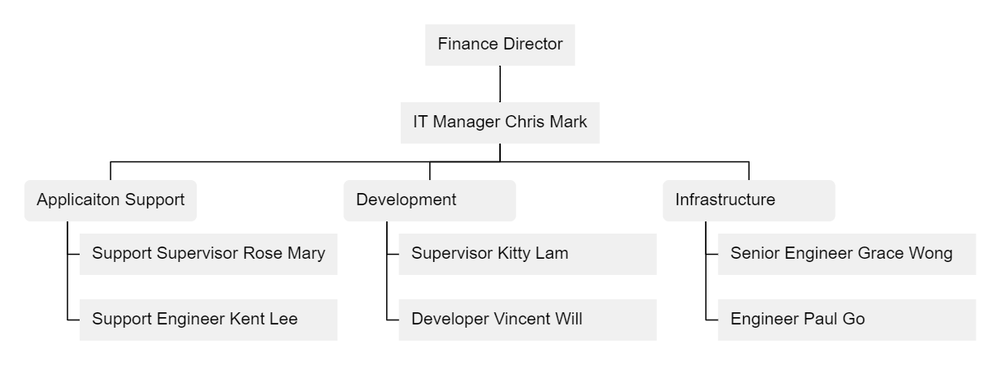

Simple Org Chart
3 min read
Objective: Able to understand and write the code:
Code
fd[Finance Director]
itm[IT Manager Chris Mark]
as(Application Support)
dev(Development)
inf(Infrastructure)
as --- [Support Supervisor Rose Mary],[Support Engineer Kent Lee]
dev--- [Supervisor Kitty Lam],[Developer Vincent Will]
inf--- [Senior Engineer Grace Wong],[Engineer Paul Go]
fd---itm---as,dev,inf
Chart

What is an Organizational Chart
Please refer wiki(English) or mbaLib (Chinese).
There are no standard for drawing org charts. Let's draw it with TypeChart tree chart.
Jot down key info first
Form or Substance? Substance first!
I will recommend to jot down the entities first.
[Finance Director]
[IT Manager Chris Mark]
(Application Support)
(Development)
(Infrastructure)
[Support Supervisor Rose Mary],[Support Engineer Kent Lee]
[Supervisor Kitty Lam],[Developer Vincent Will]
[Senior Engineer Grace Wong],[Engineer Paul Go]
I just use rounded rectangles for teams and rectangle for persons.
Labeling on demand
Also I then know the first 5 nodes will have children in the chart. In other words they are the fromNodes of links in the chart.
Therefore I add labels for these 5 nodes so that the link notations can use labels only. Just some common abbreviations is OK.
fd[Finance Director]
itm[IT Manager Chris Mark]
as(Application Support)
dev(Development)
inf(Infrastructure)
[Support Supervisor Rose Mary],[Support Engineer Kent Lee]
[Supervisor Kitty Lam],[Developer Vincent Will]
[Senior Engineer Grace Wong],[Engineer Paul Go]
Draw the relations
Write links notation to express their hierarchy relations:
fd[Finance Director]
itm[IT Manager Chris Mark]
as(Application Support)
dev(Development)
inf(Infrastructure)
as --- [Support Supervisor Rose Mary],[Support Engineer Kent Lee]
dev--- [Supervisor Kitty Lam],[Developer Vincent Will]
inf--- [Senior Engineer Grace Wong],[Engineer Paul Go]
fd---itm---as,dev,inf
Exercise
Write the org-chart of your department or team.